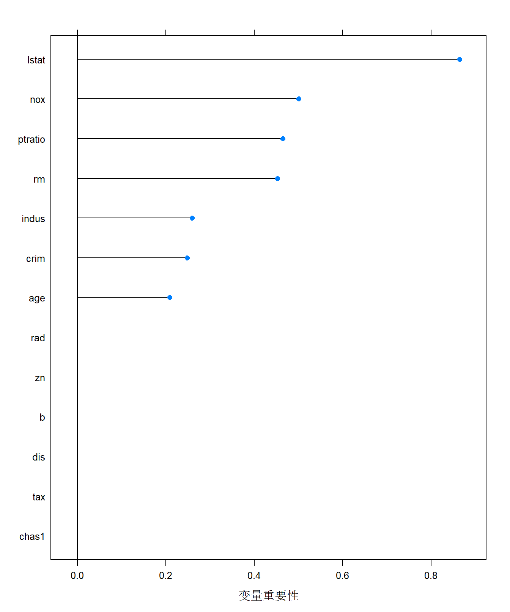

基本概念
交叉验证是机器学习中的常用模型选择方法。其中最常用的方法是K折交叉验证(k-fold cross validation)。K折交叉验证重复使用数据，把给定的数据切分为K个互斥子集，每次使用1个子集作为测试集，使用余下k-1个子集的并集作为训练集。其中，训练集用于模型的训练，测试集用于模型的评估和选择。在样本量不够充足的情况下，交叉验证法通过重复使用数据能够减少样本划分不同导致的差别，并且选择测试误差最小的模型，增强模型的泛化能力。
交叉验证主要有以下种类：
简单交叉验证 (hold-out cross validation)
k折交叉验证 (K-fold cross-validation)
留一交叉验证(leave-one-out cross validation)
谢益辉的统计动画R包animation直观地展示了交叉验证方法。
#install.packages('mlbench')
library(caret) #加载数据集R示例
10折交叉验证 (K-fold cross-validation)
#install.packages('mlbench')
rfControl <-trainControl( #10折交叉验证
method ="cv",
number =10 # Number of folds
)
library(mlbench) #加载数据集
data(BostonHousing)
head(BostonHousing) crim zn indus chas nox rm age dis rad tax ptratio b
1 0.00632 18 2.31 0 0.538 6.575 65.2 4.0900 1 296 15.3 396.90
2 0.02731 0 7.07 0 0.469 6.421 78.9 4.9671 2 242 17.8 396.90
3 0.02729 0 7.07 0 0.469 7.185 61.1 4.9671 2 242 17.8 392.83
4 0.03237 0 2.18 0 0.458 6.998 45.8 6.0622 3 222 18.7 394.63
5 0.06905 0 2.18 0 0.458 7.147 54.2 6.0622 3 222 18.7 396.90
6 0.02985 0 2.18 0 0.458 6.430 58.7 6.0622 3 222 18.7 394.12
lstat medv
1 4.98 24.0
2 9.14 21.6
3 4.03 34.7
4 2.94 33.4
5 5.33 36.2
6 5.21 28.7nrow(BostonHousing) #样本量[1] 506rpartFit <- train(medv ~ .,
data = BostonHousing,
method = "rpart",
trControl = rfControl)
rpartFitCART
506 samples
13 predictor
No pre-processing
Resampling: Cross-Validated (10 fold)
Summary of sample sizes: 456, 456, 455, 454, 455, 455, ...
Resampling results across tuning parameters:
cp RMSE Rsquared MAE
0.07165784 5.961943 0.6013342 4.218855
0.17117244 7.071905 0.4336066 5.217361
0.45274420 7.995433 0.3699801 5.779144
RMSE was used to select the optimal model using the smallest value.
The final value used for the model was cp = 0.07165784.将数据集D划分为K个子集同样存在多种划分方式。为减小因样本划分不同而引入的差别，k折交叉验证通常要随机使用不同的划分重复p次，最终的评估结果是这p 次k折交叉验证结果的均值， 例如常见的有“10次10 折交叉验证”。
repeatedcv <-trainControl(method ="repeatedcv", number =10,repeats =10, savePredictions
=TRUE)
rpartFit <- train(medv ~ .,
data = BostonHousing,
method = "rpart",
trControl = repeatedcv)
rpartFitCART
506 samples
13 predictor
No pre-processing
Resampling: Cross-Validated (10 fold, repeated 10 times)
Summary of sample sizes: 454, 455, 456, 456, 456, 456, ...
Resampling results across tuning parameters:
cp RMSE Rsquared MAE
0.07165784 5.728875 0.6110460 4.110709
0.17117244 6.641604 0.4718629 4.894044
0.45274420 8.246441 0.3297068 5.992793
RMSE was used to select the optimal model using the smallest value.
The final value used for the model was cp = 0.07165784.importance <- varImp(rpartFit, scale = F)
# 得到各个变量的重要性
plot(importance, xlab = "变量重要性")
留一交叉验证(leave-one-out cross validation)
rfControl <-trainControl(
method ="LOOCV"
) #留一交叉验证
rpartFit <- train(medv ~ .,
data = BostonHousing,
method = "rpart",
trControl = rfControl)
rpartFitCART
506 samples
13 predictor
No pre-processing
Resampling: Leave-One-Out Cross-Validation
Summary of sample sizes: 505, 505, 505, 505, 505, 505, ...
Resampling results across tuning parameters:
cp RMSE Rsquared MAE
0.07165784 6.060240 0.5665051649 4.289854
0.17117244 7.489499 0.3524415744 6.088882
0.45274420 9.700709 0.0008358062 7.539715
RMSE was used to select the optimal model using the smallest value.
The final value used for the model was cp = 0.07165784.#summary(rpartFit)
varImp(rpartFit, scale = F)rpart variable importance
Overall
lstat 0.8646
nox 0.5008
ptratio 0.4643
rm 0.4527
indus 0.2595
crim 0.2484
age 0.2089
b 0.0000
tax 0.0000
dis 0.0000
rad 0.0000
zn 0.0000
chas1 0.0000# 得到各个变量的重要性- 我们发现个别变量对于预测完全没有帮助，故可以将这些变量在之后的分析中删除。
使用caret包训练K近邻模型
- 数据：口袋妖怪数据集
- 任务：通过各种属性预测神奇宝贝是否为传说级别
- ID,每只神奇宝贝的ID
- Name,每只神奇宝贝的名字
- Type1:每只神奇宝贝的类型，比如说水系，比如说火系
- Type2:由于有特殊的神奇宝贝拥有复数以上的属性。
- Total:指每只神奇宝贝的强度，一般越高越强
- HP：指每只神奇宝贝的生命值
- Attack:指每只神奇宝贝的攻击力
- Defense:指每只神奇宝贝的防御力
- SP Attack:指每只神奇宝贝面对相克属性神奇宝贝时的攻击力，通常会比普通攻击力高
- SP Defense:指每只神奇宝贝面对相克属性神奇宝贝时的防御力，通常会比普通防御力高。
- Speed:指每只神奇宝贝的速度
- Generation：指每一只神奇宝贝属于哪一部神奇宝贝的，目前分为五部。
- Legendary:指每一只神奇宝贝是不是属于传说级别的神奇宝贝，比如麒麟，超梦，梦幻之类的。
library(readr)
library(caret)
library(kknn)
pokemon <- read_csv("E:/R_codes/others/Pokemon.csv")
duindex <- duplicated(pokemon$id)
#用!来取反
pokemon <- pokemon[!duindex,]
pokemon$Legendary <- as.factor(pokemon$Legendary)
pokemon <- na.omit(pokemon)
trctrl <- trainControl(method = "repeatedcv", number = 10, repeats = 10)
pokemon <- na.omit(pokemon)
set.seed(3333)
knn_fit <- train(Legendary ~ Type1 + Type2 + Total+ HP + Defense+ Attack + Speed + Generation, data = pokemon, method = "knn",
trControl=trctrl,
preProcess = c("center", "scale"),
tuneLength = 10)
knn_fitk-Nearest Neighbors
350 samples
8 predictor
2 classes: 'FALSE', 'TRUE'
Pre-processing: centered (44), scaled (44)
Resampling: Cross-Validated (10 fold, repeated 10 times)
Summary of sample sizes: 316, 316, 314, 315, 314, 315, ...
Resampling results across tuning parameters:
k Accuracy Kappa
5 0.9161858 -0.006401245
7 0.9176074 -0.007358305
9 0.9229972 0.000000000
11 0.9232829 0.006534653
13 0.9229972 0.000000000
15 0.9229972 0.000000000
17 0.9229972 0.000000000
19 0.9229972 0.000000000
21 0.9229972 0.000000000
23 0.9229972 0.000000000
Accuracy was used to select the optimal model using the largest value.
The final value used for the model was k = 11.